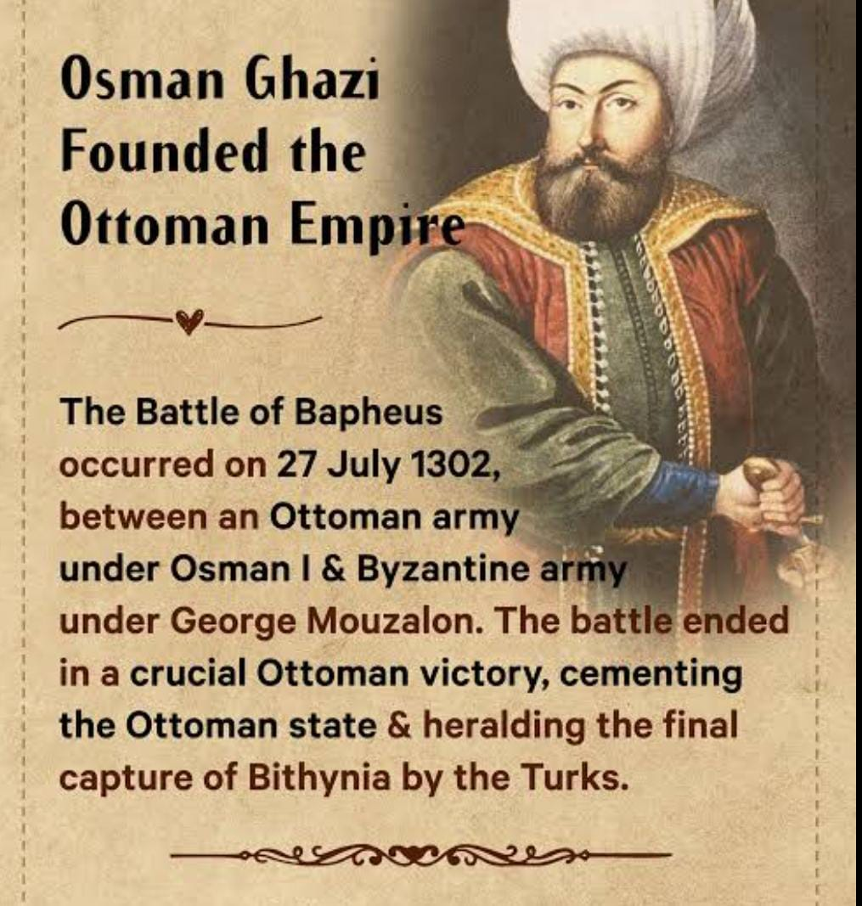
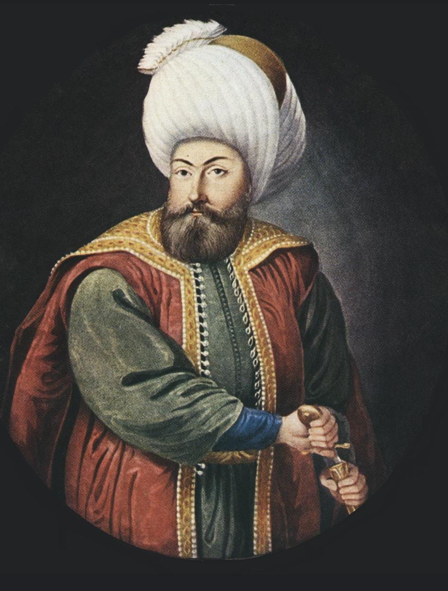

ABOUT OTTOMAN EMPIRE
It was created by a man OSMAN who is the leader of Ottoman Empire
The Ottoman Empire is also known as Turkish Empire
This Empire was controlled by the mach of Southeast Europe,Western Asia,and Northern Africa
It was founded at the end of the 13th century by the tribal leader Osman
Ottoman Empire was at the centre of interactions between the Middle East and Europe for six centuries
SULEYMAN SHAH is the grand father of OSMAN,and ERTUGRUL GHAZI is the father of OSMAN.
This empire fought with the people whose intentions are bad with kind persons and took the
advantage with the people
At first the Ottoman Empire named there place as KAYI KABILA which means KAYI Tribe.
Later Osman changed there flag and name because he wants to know the people through out the world that
there is a empire who is going to have a great position in the world in those days only.
Here first we are going to talk about Ottoamn SULTAN SULEYMAN SHAH'S BIO.
 When comes to family he married a woman who supported him until Suleyman shah's death.Her name was HAYME HATUN she
is been with him and kept full trust and had a good positive nature with other's.
When comes to family he married a woman who supported him until Suleyman shah's death.Her name was HAYME HATUN she
is been with him and kept full trust and had a good positive nature with other's.
They had 4 sons:
Gundogdu Bey
Sungur Tekin
Ertugrul Gazi
Dundar Gazi
He was a great fighter and he tried to give a all his efforts to his people.
He was a humble person and trustworthy person.He stood like a warrior at his last Stage also.
He dead with a disease which is not healed by any medical products.
ERTUGRUL GAZI

Ertugrul was a man who is kind in nature and harsh with the enemies.
He was the leader of Kayi tribe.
Ertugrul married Halime Sultan and they lead there life with a so many ups and downs but there love between them is
so beautiful.That anyone can fell in love with there story.
He was a heroic champion fighter for the cause of Islam,he ruled the lands around sogut,a town between Bursa
and Eskisehir.Upon his death in 1281 his son Osman,for whom the empire took its name,expanded the territory
to 16,000 square kilometers he conquer.
Ertugrul soldiers are all around 400 horsemen to help sejkus of Rum.His bravery and strong leadership set
the foundation.
Ertugrul have more than five friends but he choose share all his happiness and problems to only 4 friends.They are :
1.Turgut
2.Bamsi
3.Duan
4.Abdul Rehman Gazi
These person's have a huge respect to Ertugrul,they never left and had a strong friendship bond till there death they never left
each other
Turgut is the most beloved one to Ertugrul.
They fought for religion and they shown merse towards the people the poor people and they gave a tough time to the MONGOLS and
BYZANTINES.Sadattein was the strongest foe of Ertugrul,his strategies were very strong and he gave very a tough time to Ertugrul
and RIYASET because he wants to become a Sultan of the Riyaset.
Ertugrul and Halima have 3 sons
Gunduz Alp
Savci
Osman Gazi
OSMAN GAZI


The great warrior of Islam was OSMAN GAZI
Father of the OTTOMAN Empire and was born in Sultanate of RUM
RABIA's BALA HATUN AND MALUN HATUN both are OSMAN wives.
Reign:1280-1299(Sultanate of Rum)
1299-1323/4(Ottoman Empire)
And he was born in the year 1258 and he died in the year 1324.
After Osman his son Orhan was ruled the empired the Ottoman.
Osman, a just and energetic tribal leader and military commander,lent his name for his small realm that went on to dominate world afairs for
nearly seven centuries
| Names |
Empire |
Flag |
Suleyman Shah |
Ottoman Empire |
Kayi flag |
| Ertugrul Gazi |
Ottoman Empire |
Kayi flag |
Osman Gazi |
Ottoman Empire |
Kayi flag |
| Orhan Gazi |
Ottoman Empire |
Kayi flag |